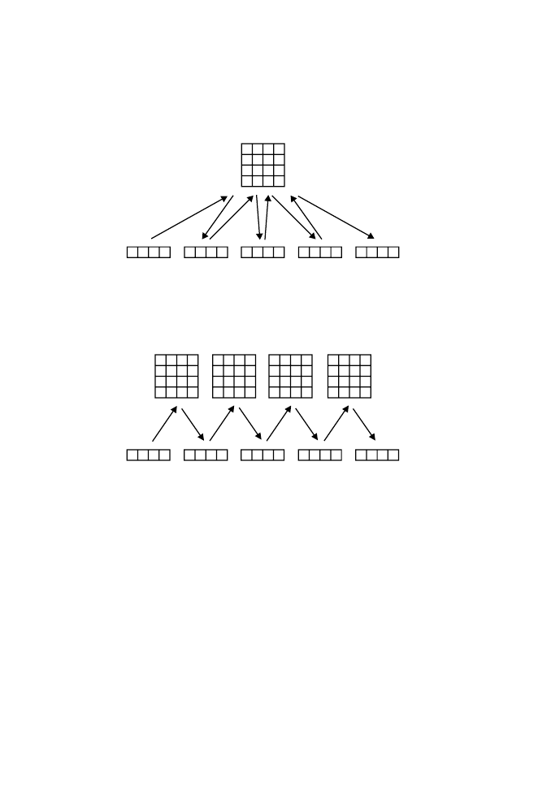

9.3 Representing Signals in DNA: Markov Chains
243
π
2
3
4
5 . . .
. . .
Markov chain, identical distributions
Transition matrix
A
.
Transition
matrix
2
Transition
matrix
3
Transition
matrix
4
Transition
matrix
5
Markov chain, nonidentical distributions
B
.
. . .
π
2
3
4
5 . . .
. . .
Fig. 9.4.
Contrast between the Markov chain representation for positions with
identical probability distributions (panel A) and the model for positions in a sig-
nal (binding site) sequence (panel B). Numbered four-element horizontal rows are
the vectors of probabilities for
A
,
C
,
G
, and
T
at each position. These vectors are
transformed to vectors at the next position by matrix multiplication by a transition
matrix. In panel A, a single transition matrix is employed. In panel B, a different
transition matrix is required for each successive position.
abilistic description is 3 + 12(
w
−
1), or for
w
= 6 a total of 63 parameters (in
contrast with 18 parameters for a conventional PWM representation,
w
= 6).
In Computational Example 9.2, we represent the GATA-1 sites by using a
Markov chain.